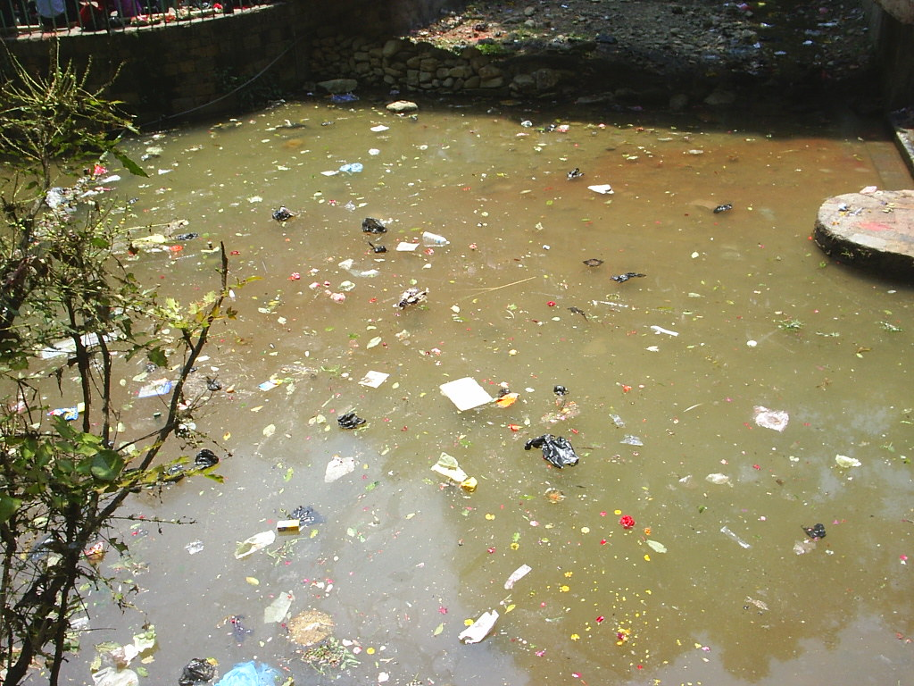

Водата покрива повече от 70% от повърхността на Земята. Животът на Земята е възникнал във вода и затова не е изненадващо, че всички живи същества на нашата синя планета се нуждаят от вода.
За да можем и в бъдеще да имаме достъп до чиста вода и да се ползваме от ресурсите на екологично чистите океани и реки, е необходимо да променим из основи начина, по който използваме и опазваме водите.
На източниците на 3,4-те милиарда куб.м. вода, използвани за водоснабдяване, в земеделието и рибарството, за производствени и енергийни цели.
Реките на България стават все по-замърсени или изчезват заради неправомерно построени ВЕЦ-ове или изхвърляне на отпадъци от производства. За това от години алармират от сдружение "Балканка" – те са и един от главните инициатори на подадените в Европейската комисия жалби заради нарушение на три водни директиви. Много са проблемите и заплахите за българските гори. Като най-сериозни се очертават недалновидното управление на горските ресурси и високото ниво на незаконни дейности в горския сектор.
В някои от най-често срещаните водни замърсители са битовите отпадъци, промишлените отпадни води, както и почти всички инсектициди и пестициди, детергенти и торове. Част от замърсяването на водата се причинява от директни източници, като фабрики, съоръжения за управление на отпадъците, рафинерии и др., които директно отделят отпадъци и вредни странични продукти в най-близкия водоизточник, без да ги третират. Индиректните източници включват замърсители, които влизат във водните басейни през подземните води, почвата или през атмосферата като киселинен дъжд.